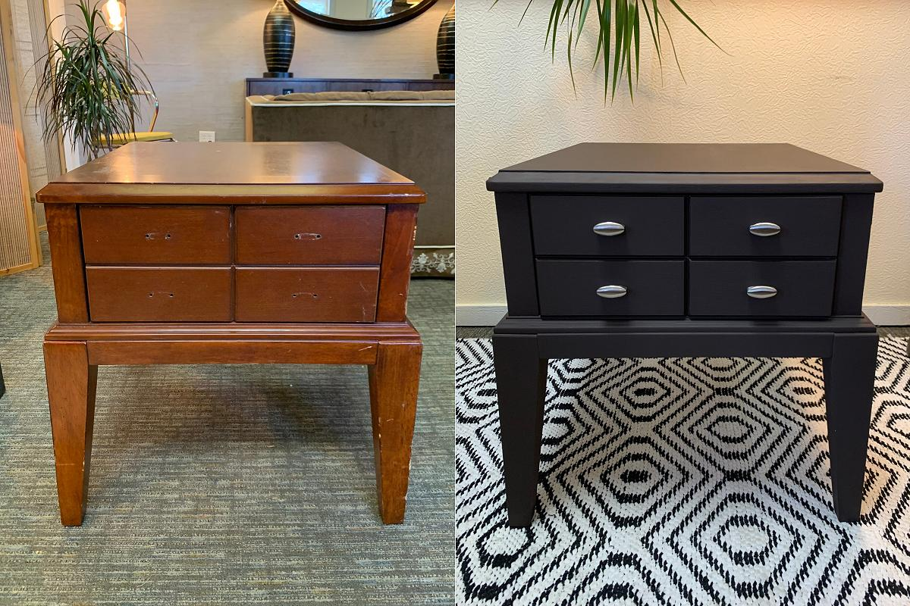
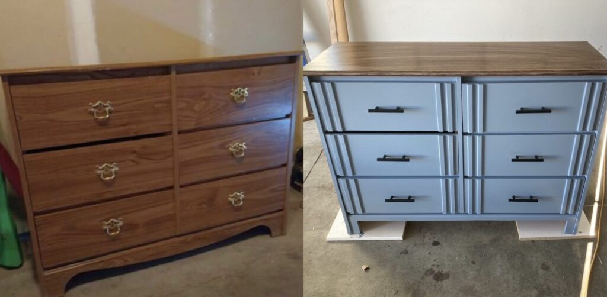
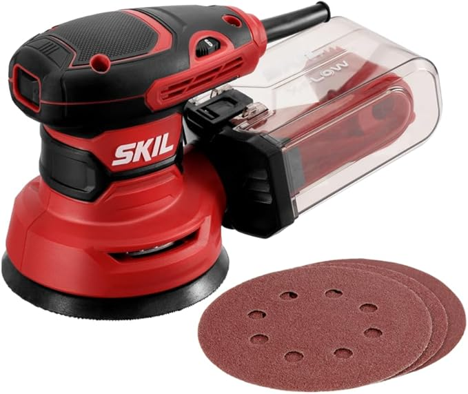
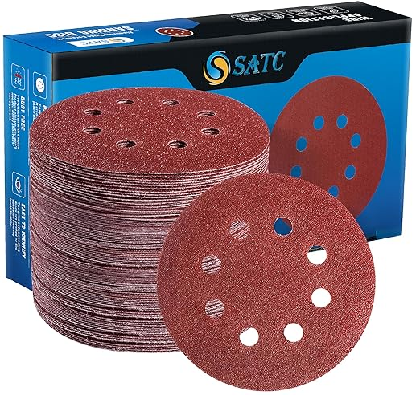
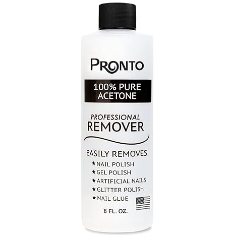
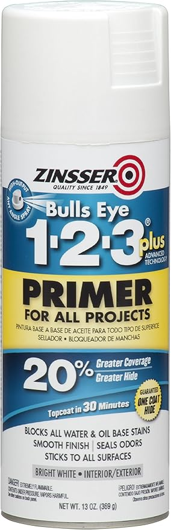
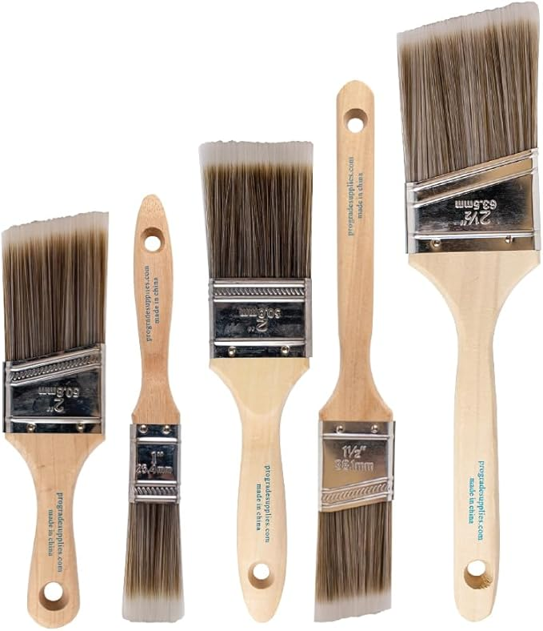
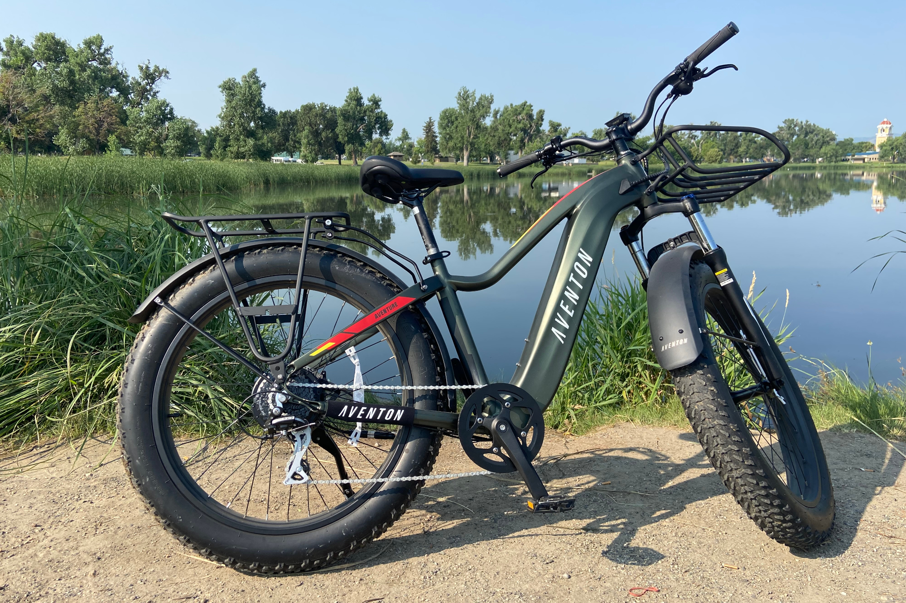

How I'd Do It
The exact process I would use to do this.
01. Finding the Stuff
The most reliable place to find stuff, especially for free is Facebook Marketplace. I would scroll or go to the "free items" tab, and go there. Obviously only trust people with good reviews, you know, Ma can assist me with this. I'd look for furniture that has potential, so if it looks good, but is beaten up, that could be very good. Stuff like that mostly.
02. Checking it Out
I wouldn't buy anything that would require major fixes, such as a broken cabinet, lopsided drawer, or anything like that. Scratches, peeling paint, and minor problems like that would work.
03. Fixing it Up
There are a lot of tools that could help. This is where I might need the investment money, but I feel a better path is to just stick with what I have for now. Until I have enough money to buy tools. As I said, 0 start up cost. (More information in tools tab)
04. Selling It
I would take good pictures, make sure everything looks clean and professional, as I know that is what sells it.
Why I Flip
I just need some money to pay off that bike. Also it could be a very good learning moment for me to learn labor and actual work rather than all my failed businesses from the comfort of my room.
Making My Own Money
This teaches me responsibility. That works for the future since I have to pay bills but I don't have any right now so I don't know how that's relevant. (More info later on)
Saving the Planet
This wouldn't help just by me, but It would feel good to know that furniture gets dumped daily and ruins some animals lives. So I might be helping 0.0001%.
Finished Work
Getting something that doesn't look good, and working on it and then seeing the finished result would be very satisfying, only for me. Also that cash coming in hopefully. (Facebook is the most popular selling platform in the world, and they also hundreds of thousands, and maybe millions every single day.)
Showcase
The transformations of my first few flips.
Project #01 (Sold: $450)

Bought for: $0
Project #02 (Sold: $250)

Bought for: $0
My Basic Tools
These are the tools I believe would help me if I can invest in them. Total Money Invested: roughly $60-$75.

Orbital Sander & Grits
The most important thing. I use 80, 120, and 220 grit sandpaper to get rid of all the paint if I need to, smoothen the edges, and fix chips.

Grit Set
To make surfaces smooth, as you need many of them for it to work properly.

Cleaners & Stuff
Acetone for getting paint and sticky stuff off, and stuff that is deep inside. God knows what that could be.

Paint
I'm not too informed, but I've done my research and I know paint matters. Need to find more research on the best quality and durable paint so it doesn't chip.

Brushes & Hardware
How I would actually put the paint on. Good brushes and new knobs off Amazon make everything look cleaner.
Overall
This could be a productive thing to do in my freetime, teaches my responsiblity, labor, hardwork, etc.
-
Making More Money
If it goes real good, I could buy better tools, paints, and anything needed. Also in the future if I would wanna try out a new buisness idea, but I don't have enough money for the start up cost, and pay off that dang Ebike.
